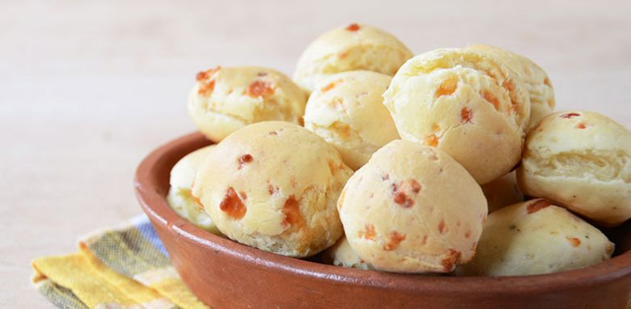

¿Qué es la Chipa?
La chipa es un tipo de pan pequeño y redondo, típico de Paraguay, Argentina y el sur de Brasil. Está hecho principalmente de almidón de mandioca (yuca), queso, leche y huevos.
Origen e Historia
La chipa tiene sus raíces en la época precolombina, cuando los guaraníes preparaban una especie de pan con harina de mandioca. Con la llegada de los españoles y la introducción de ingredientes como el queso y los huevos, la receta evolucionó hasta convertirse en lo que hoy conocemos como chipa.
En Paraguay, la chipa es especialmente popular durante la Semana Santa, aunque se consume todo el año. Existen varias versiones, incluyendo la chipa asador, que se cocina en una vara sobre el fuego, y la chipa so'o, que contiene carne.
Nota
¡La Chipa es el mejor alimento del mundo!